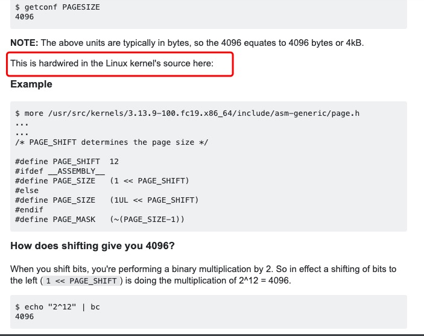

概述
- 本文阐述Linux进程虚拟内存相关概念
虚拟内存和物理内存的概念
1 进程看到的都是虚拟内存，以为自己占有整个内存以及CPU资源。这样做的好处是：
1.1 就算所有进程或者某个进程的内存需求总和大于实际的物理内存，系统上仍然可以运行起来这些进程，并且可以做到同时运行这些进程。
1.2 Linux的虚拟地址空间范围为0～4G，Linux内核将这4G字节的空间分为两部分，将最高的1G字节（从虚拟地址0xC0000000到0xFFFFFFFF）供内核使用，称为内核空间。而将较低的3G字节（从虚拟地址0x00000000到0xBFFFFFFF）供各个进程使用，称为用户空间。
1.3 因为每个进程可以通过系统调用进入内核，因此，Linux内核由系统内的所有进程共享。于是，从具体进程的角度来看，每个进程可以拥有4G字节的虚拟空间。
1.4 Linux使用两级保护机制：0级供内核使用，3级供用户程序使用，每个进程有各自的私有用户空间（0～3G），这个空间对系统中的其他进程是不可见的，最高的1GB字节虚拟内核空间则为所有进程以及内核所共享。
1.5 内核空间中存放的是内核代码和数据，而进程的用户空间中存放的是用户程序的代码和数据。不管是内核空间还是用户空间，它们都处于虚拟空间中。 虽然内核空间占据了每个虚拟空间中的最高1GB字节，但映射到物理内存却总是从最低地址（0x00000000），另外，使用虚拟地址可以很好的保护内核空间被用户空间破坏，虚拟地址到物理地址转换过程有操作系统和CPU共同完成(操作系统为CPU设置好页表，CPU通过MMU单元进行地址转换)。
2 多任务操作系统中的每一个进程都运行在一个属于它自己的内存沙盒中，这个沙盒就是虚拟地址空间（virtual address space），在32位模式下，它总是一个4GB的内存地址块。这些虚拟地址通过页表（page table）映射到物理内存，页表由操作系统维护并被处理器引用。每个进程都拥有一套属于它自己的页表。
2.1 每个进程有一个page table,对应自己的物理内存区域
3 物理内存分配的最小单位是一个页，page，单位为4KB； 通过getconf PAGESIZE 查看
为什么是4096呢？是在内核源代码里写死的

进程的virtual memory示意图
如果是32位的Linux系统（64位的Linux系统，应该类似），那么每个进程都是4GB的virtual memory地址空间；如下：
（一） 首先来仔细探讨一下占用3GB的User Space，其示意图如下：
- 1 text：代码段。存放的是程序的全部代码（指令），来源于二进制可执行文件中的代码部分
- 2 initialized data（简称data段）和 uninitialized data（简称bss段）组成了数据段。其中initialized data简称data， uninitialized data简称bss
- 3 data段存放的是已初始化全局变量和已初始化static局部变量，来源于二进制可执行文件中的数据部分；
- 4 bss段存放的是未初始化全局变量和未初始化static局部变量，其内容不来源于二进制可执行文件中的数据部分（也就是说：二进制可执行文件中的数据部分没有未初始化全局变量和未初始化static局部变量）。根据C语言标准规定，他们的初始值必须为0，因此bss段存放的是全0。将bss段清0的工作是由系统在加载二进制文件后，开始执行程序前完成的，系统执行这个清0操作是由内核的一段代码完成的，这段代码就是即将介绍的exec系统调用。至于exec从内存什么地方开始清0以及要清0多少空间，则是由记录在二进制可执行文件中的信息决定的（即：二进制文件中记录了text、data、bss段的大小）。可以理解bss段是编译二进制时就确定好了，那么为什么不是编译时就把数据全部置为0，而是要等kernel的exec调用来做呢？原因很简单，比如bss段有1000KB，那么编译时就把它置为0，那么二进制文件放在文件系统上就要占用1000KB大小，但是想个办法描述一下我放到内存里运行时，需要占用1000KB大小，这段描述本身肯定不用1000KB呀。所以Linux系统设计时，肯定是选择了后者。
Text, BSS, Data段在编译时已经决定了进程将占用多少VM，Linux上可以通过size命令，知道这些信息：
/usr/bin/size ./a.out
- 5 内存的最高端（高地址） 内存的最高端存放的是命令行参数和环境变量，将命令行参数和环境变量放到指定位置这个操作是由OS的一段代码（exec系统调用）在加载二进制文件到内存后，开始运行程序前完成的。这个应该很好理解，Linux上开启一个进程，在该进程内都可以读到命令行参数以及环境变量。
正常情况下，Linux进程不能对用来存放程序代码的内存区域执行写操作，即程序代码是以只读的方式加载到内存中，但它可以被多个进程安全的共享。
6 小结， 一个进程(task_struct),它的内存有如下区分（从低地址向高地址说）：
-
- text
-
- data（ initialized data）
-
- bss （ uninitialized data）
-
- heap
-
- 未分配的虚拟空间
-
- stack
-
- 命令行参数和环境变量
-
- kernel space
再次升华, 引入 Random Offset
上图中，蓝色部分是真实会映射到物理内存的VM，白色部分是不会映射到物理内存的VM。
- 问题1: 为什么会出现Radom brk offset ,Random mmap offset 这些？
-
答案： 如果每个进程的VM地址都是一模一样的话，很容易造成安全问题，因此Linux通过Radom技术加强了这方面的安全。
-
问题2: VM的地址，不是从0开始，而是从0x08048000
- 答案: 据说是为了捕获NULL指针
(一) 栈
（二） 堆空间
为什么叫堆空间呢？这里分为2块内存，一个是直接位于Stack下面的： Memory Mapping Segment ，另一个是位于 Memory Mapping Segment 下面的heap 。这2块内容和起来叫堆空间。 我们首先来说说 Memory Mapping Segment
2.1 内存映射段(Memory Mapping Segmengt)
在栈的下方是内存映射段，内核将文件的内容直接映射到内存。任何应用程序都可以通过 Linux的mmap()系统调用请求这种映射。内存映射是一种方便高效的文件I/O方式，所以它被用来加载动态库。创建一个不对应于任何文件的匿名内存映射也是可能的，此方法用于存放程序的数据。在Linux中，如果你通过malloc()请求一大块内存，C运行库将会创建这样一个匿名映射而不是使用堆内存。“大块”意味着比MMAP_THRESHOLD还大，缺省128KB，可以通过mallocp()调整。
在Linux中当动态分配内存大于128K时，会调用mmap函数在esp到break brk之间找一块相应大小的区域作为内存映射段返回给用户。这个esp和break brk之间，就是Memory Mapping Segment.
1 首先这个Memory Mapping Segment肯定是最大栈空间和break brk之间的空间，至于最大栈空间是不是就是esp指针指向的地址，这个不清楚。
2 在Memory Mapping Segment上分配内存称为内存映射。
2.2 堆
堆用于运行时内存分配。 进程通过malloc()申请内存，小于128KB时，会在堆上分配。是指这段空间。
并且，它的工作模式跟栈类似，遵守LIFO原则，即后面申请的内存会先被释放。
这里的释放，不是真正的回收，只是调整break brk指针的位置。在堆上分配内存和在Memory Mapping Segment上分配内存，两者的区别是内存映射段销毁时，会释放其映射到的物理内存，而break brk指向的数据被销毁时，不释放其物理内存，只是简单将break brk回撤，其虚拟地址到物理地址的映射依旧存在，这样使的当再需要分配小额内存时，只需要增加break brk的值，由于这段虚拟地址与物理地址的映射还存在，于是不会触发缺页中断。只有在break brk减少足够多，占据物理内存的空闲虚拟内存足够多时，才会真正释放它们。
2.3 应用场景
- 1 malloc小于128k的内存，使用brk分配内存，将_edata往高地址推(只分配虚拟空间，不对应物理内存(因此没有初始化)，第一次读/写数据时，引起内核缺页中断，内核才分配对应的物理内存，然后虚拟地址空间建立映射关系)，如下图：
-
- 1.1 进程启动的时候，其（虚拟）内存空间的初始布局如图1所示。 其中，mmap内存映射文件是在堆和栈的中间（例如libc-2.2.93.so，其它数据文件等），为了简单起见，省略了内存映射文件。 _edata指针（glibc里面定义）指向数据段的最高地址。
-
- 1.2 进程调用A=malloc(30K)以后，内存空间如图2： malloc函数会调用brk系统调用，将_edata指针往高地址推30K，就完成虚拟内存分配。 你可能会问：只要把_edata+30K就完成内存分配了？ 事实是这样的，_edata+30K只是完成虚拟地址的分配，A这块内存现在还是没有物理页与之对应的，等到进程第一次读写A这块内存的时候，发生缺页中断，这个时候，内核才分配A这块内存对应的物理页。也就是说，如果用malloc分配了A这块内容，然后从来不访问它，那么，A对应的物理页是不会被分配的。
-
- 1.3 进程调用B=malloc(40K)以后，内存空间如图3。
-
2 malloc大于128k的内存，使用mmap分配内存，在堆和栈之间找一块空闲内存分配(对应独立内存，而且初始化为0)，如下图：

-
- 2.1 进程调用C=malloc(200K)以后，内存空间如图4： 默认情况下，malloc函数分配内存，如果请求内存大于128K（可由M_MMAP_THRESHOLD选项调节），那就不是去推_edata指针了，而是利用mmap系统调用，从堆和栈的中间分配一块虚拟内存。 这样子做主要是因为:: brk分配的内存需要等到高地址内存释放以后才能释放（例如，在B释放之前，A是不可能释放的，这就是内存碎片产生的原因，什么时候紧缩看下面），而mmap分配的内存可以单独释放。 当然，还有其它的好处，也有坏处，再具体下去，有兴趣的同学可以去看glibc里面malloc的代码了。
-
- 2.2 进程调用D=malloc(100K)以后，内存空间如图5；
-
- 2.3 进程调用free(C)以后，C对应的虚拟内存和物理内存一起释放。

-
- 2.4 进程调用free(B)以后，如图7所示： B对应的虚拟内存和物理内存都没有释放，因为只有一个_edata指针，如果往回推，那么D这块内存怎么办呢？ 当然，B这块内存，是可以重用的，如果这个时候再来一个40K的请求，那么malloc很可能就把B这块内存返回回去了。
-
- 2.5 进程调用free(D)以后，如图8所示： B和D连接起来，变成一块140K的空闲内存。
-
- 2.6 默认情况下： 当最高地址空间的空闲内存超过128K（可由M_TRIM_THRESHOLD选项调节）时，执行内存紧缩操作（trim）。在上一个步骤free的时候，发现最高地址空闲内存超过128K，于是内存紧缩，变成图9所示。